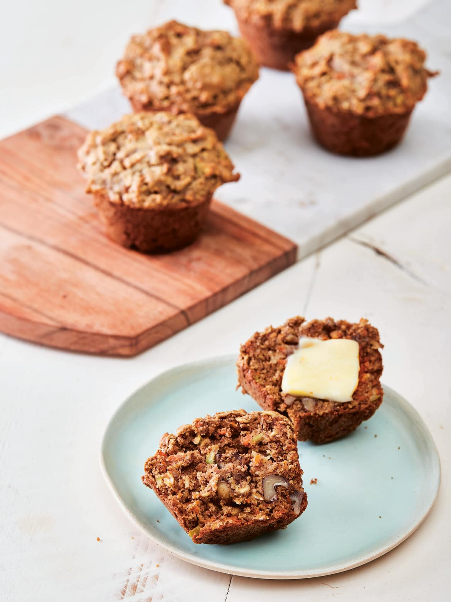

Superhero Muffins

Description
These muffins were designed for superheroes like you. They're packed full of veggies, and are sweetened with maple syrup instead of refined sugar. In addition, almond meal and whole grain oats replace nutrient-stripped white flour.
And don't fear the butter. Fueling up with healthy fats is a great way to start your day. Fat helps transport important vitamins throughout your hardworking body and will help keep you satisfied longer.
Ingredients
- 2 cups almond meal (same thing as almond flour)
- 1 cup old-fashioned rolled oats (use gluten-free if sensitive)
- 1/2 cup chopped raw sliced almonds (Flanagan calls for chopped walnuts)
- 1/2 cup raisins
- 2 teaspoons ground cinnamon
- 1/2 teaspoon ground nutmeg
- 1 teaspoon baking soda
- 1/2 teaspoon kosher salt
- 3 eggs, beaten
- 1 cup grated carrot (about 2 carrots)
- 6 tablespoons unsalted butter, melted
- 1/2 cup Grade B maple syrup
- 1 teaspoon vanilla
- Paper muffin cups
Steps
- Arrange a rack in the center of the oven and preheat the oven to 350°F. Line a 12-cup standard muffin tin with paper muffin cups.
- In a large bowl, combine the almond meal, oats, nuts, raisins, cinnamon, nutmeg, baking soda, and salt.
- In a separate bowl, mix together the eggs, carrot, butter, maple syrup, and vanilla.
- Add the wet ingredients to the dry ingredients, mixing until just combined.
- Spoon the batter into the muffin cups filling each to the brim. Bake until the muffins are nicely browned on top and a toothpick inserted in the center of a muffin comes out clean, about 25 to 35 minutes.
Return to home page